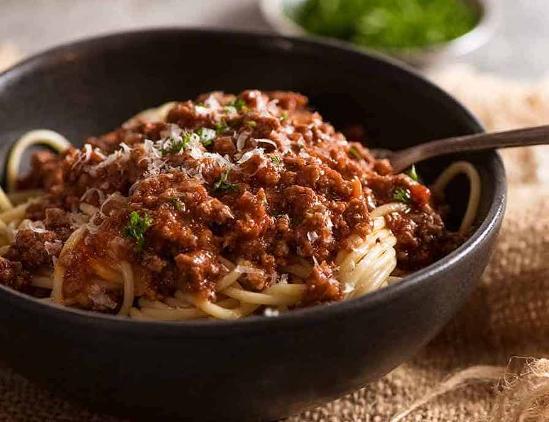

Spaghetti Bolognese

Description
Everyone needs a great everyday Spaghetti Bolognese recipe, and this is mine! The Bolognese Sauce is rich, thick and has beautiful depth of flavour. It's perfect for a quick midweek meal though if you have the time to simmer this Meat Sauce for a couple of hours, you'll take it from seriously delish to OMG this is amazing!!
Ingredients
- 1 1/2 tbsp olive oil
- 2 garlic cloves (minced)
- 1 onion
- 500g beef minced
- 1/2 cup (125ml) beef stock
- 2 beef bouillon cubes
- 800g crushed tomatoes
- 2 tbsp tomato paste
- 2 tsp Worcestershire sauce
- 2 dried bay leaves
- 2 sprigs fresh thyme
- Salt and pepper
Steps
- Heat oil in a large pot or deep skillet over medium high heat. Add onion and garlic, cook for 3 minutes or until light golden and softened.
- Turn heat up to high and add beef. Cook, breaking it up as your go, until browned.
- Add red wine. Bring to simmer and cook for 1 minute, scraping the bottom of the pot, until the alcohol smell is gone.
- Add remaining ingredients except salt and pepper. Stir, bring to a simmer then turn down to medium so it bubbles gently. Cook for 20 - 30 minutes (no lid), adding water if the sauce gets too thick for your taste. Stir occasionally.
- Slow simmer option: really takes this to another level, if you have the time! Add 3/4 cup of water, cover with lid and simmer on very low for 2 - 2.5 hours, stirring every 30 minutes or so. Uncover, simmer 20 minutes to thicken sauce.
- Adjust salt and pepper to taste right at the end. Serve over spaghetti - though if you have the time, I recommend tossing the sauce and pasta per steps below.